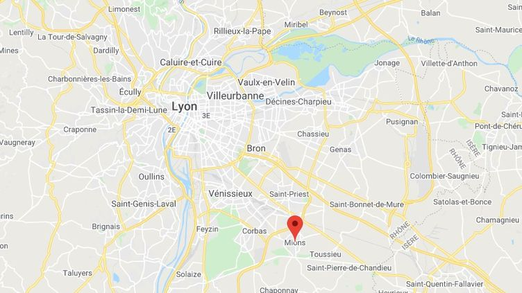

Bienvenue dans la page 2 !!
Mon menu :
- pour aller page 1 :Page 1
- pour aller page 2 : Page 2
- pour aller à l'interview :Page 3
- pour aller à la conclusion : Page 4
1. Introduction
D’abord je cherchais un stage dans une entreprise qui travaille dans l'informatique. Mon premier stage à la Française des Jeux (FDJ) était annulé une semaine avant le début car il y avait des employés positifs au virus : donc mon père et ma mère cherchaient un autre stage. Mon père m’en trouve un et le jour qui suit, l’entreprise l’annule. Mes parents et moi recommencèrent à chercher un stage directement après avoir appris cette nouvelle, aucune autre entreprise ne voulait car c’était trop tard (samedi 8 janvier). Ma mère m'appelle et me dit qu'elle a trouvé un stage dans une entreprise en informatique chez M. Saignol. J’ai été heureux que M. Saignol puisse m'accueillir dans son entreprise.
2. Présentation de l’entreprise (Fiche d’identité)
2.1 Présentation générale de la structure d'accueil
Nom de l’entreprise : CS édition & corpus
Adresse : 54 Allée du Château, 69780 Mions.
Téléphone : 06 44 07 60
Adresse mail : contact@comesaignol.fr
Date de création : 25 septembre 2020
Évolution de la structure : Cette entreprise est une auto-entreprise.
Etablissement : Cet établissement est privé.
Secteur d’activité : Tertiaire
2.2 Situation géographique
Cette entreprise se situe à Mions, une petite ville au Sud-Est de Lyon comme le montre la carte ci-dessous.
2.3 Aspects sociaux, horaires, profils du personnel.
Il y a une seule personne dans l'entreprise qui est le patron (Côme Saignol) car c'est une auto-entreprise. Pour les horaires M.Saignol travaille 3 heures le matin (9h00-12h00) il a ensuite 2 heures de pose et l'après- midi il travaille 3 heures (14h00-17h00). A midi il prépare son repas. L’entreprise prévoit peut-être d'évoluer sous une autre forme (SARL). Il n’y a pas de risques sauf à supprimer les données des clients par erreur.
2.4 Décrire les locaux et le matériel
L’entreprise est équipée en matériel informatique (ordinateur, imprimante, siège) et en logiciel adapté pour créer des sites webs. Tout le matériel est récent, les ordinateurs sont fonctionnels et il y a des chambres pour dormir et pour ne pas être loin de l’entreprise.
2.5 Description de l’activité de l’entreprise
2.5.1 L’entreprise et sa production :
L’entreprise produit des sites internet ou les clients et d'autres personnes peuvent s’y rendre. Ils trouveront sur ce site la réécriture de livres anciens et toutes les informations possibles sur ces livres. Par exemple : le site http://ccj-epicherchel.huma-num.fr/fr/le-projet-epicherchel/
2.5.2 Structure hiérarchique et différents services
Il y a un seul employé qui est le chef d’entreprise (Côme Saignol) car c'est une auto-entreprise.
2.5.3 L’environnement de l’entreprise
Ces clients sont des universités dans toute la France. Ils payent à l'aide de financement publics. Il y a très peu de concurrents dans ce domaine et l’entreprise se fait connaître avec du bouche à oreille. M. Saignol n’a pas le temps de créer un site web pour son entreprise et préfère travailler pour ses clients.
3. Les métiers dans l’entreprise
3.1 Mon activité durant le stage
Pendant mon stage j’ai appris à créer mon propre site web grâce au HTML et au CSS. Dans mon site il y a mon rapport de stage, l’interview et une conclusion. J’ai pris la décision de mettre des effet de rouge pour faire comme un dégradé J’ai mis tous les titres de la même police et de la même couleur, tous les sous-titres de la même police et de la même couleur et j’ai fait la même chose avec les paragraphes. Voici le lien de mon site web : https://nchassaud.github.io/my-stage/